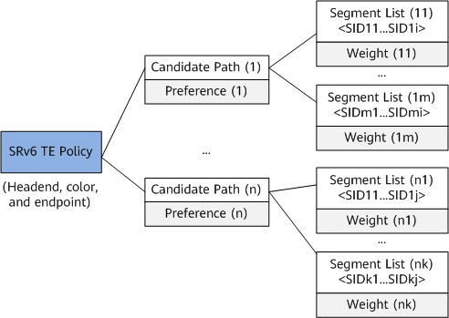
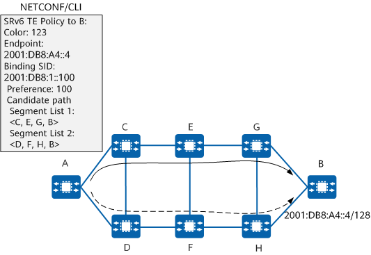

SRv6 TE Policy Model
Figure 1 shows the SRv6 TE Policy model. One SRv6 TE Policy may contain multiple candidate paths with the preference attribute. The valid candidate path with the highest preference functions as the primary path of the SRv6 TE Policy.
A candidate path can contain multiple segment lists, each of which carries a Weight attribute. Each segment list is an explicit SID stack that instructs a network device to forward packets, and multiple segment lists can work in load balancing mode.
Figure 1 SRv6 TE Policy model
Manual SRv6 TE Policy Configuration
An SRv6 TE Policy can be manually configured on a forwarder through the CLI or NETCONF. Alternatively, it can be delivered to a forwarder after being dynamically generated through a protocol (such as BGP) on a controller — this mode facilitates network deployment. If SRv6 TE Policies generated in both modes exist, the forwarder selects an SRv6 TE Policy according to the following rules:
- Protocol-Origin of SRv6 TE Policy: The default value of Protocol-Origin is 20 for an SRv6 TE Policy delivered through BGP and is 30 for a manually configured SRv6 TE Policy. A larger value indicates a higher preference.
- <ASN, node-address> tuple of SRv6 TE Policy: ASN indicates an AS number. For both ASN and node-address, a smaller value indicates a higher preference. The ASN and node-address values of a manually configured SRv6 TE Policy are fixed at 0 and 0.0.0.0, respectively.
- Discriminator: A larger value indicates a higher preference. For a manually configured SRv6 TE Policy, the value of Discriminator is the same as the preference value.
An SRv6 TE Policy can be created using End SIDs, End.X SIDs, anycast SIDs, binding SIDs, or a combination of them.
Figure 2 shows an example of manually configuring an SRv6 TE Policy through the CLI or NETCONF. For a manually configured SRv6 TE Policy, information such as the endpoint and color attributes, preference values of candidate paths, and segment lists must be configured. Note that the preference values of candidate paths in the same SRv6 TE Policy cannot be the same.
Figure 2 Manual SRv6 TE Policy configuration
For manually configured SRv6 TE Policies, binding SIDs must be configured within the static segment of locators.